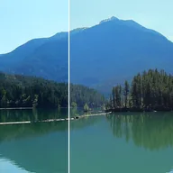

Realces e sombras

Recupera ou realça realces claros e clareia ou aprofunda sombras escuras, conforme o brilho de cada pixel.
Configurações
| Configuração | Tipo | Intervalo | Padrão |
|---|---|---|---|
| Realces | Número | 0 a 2 | 1 |
| Sombras | Número | 0 a 2 | 1 |

Recupera ou realça realces claros e clareia ou aprofunda sombras escuras, conforme o brilho de cada pixel.
| Configuração | Tipo | Intervalo | Padrão |
|---|---|---|---|
| Realces | Número | 0 a 2 | 1 |
| Sombras | Número | 0 a 2 | 1 |